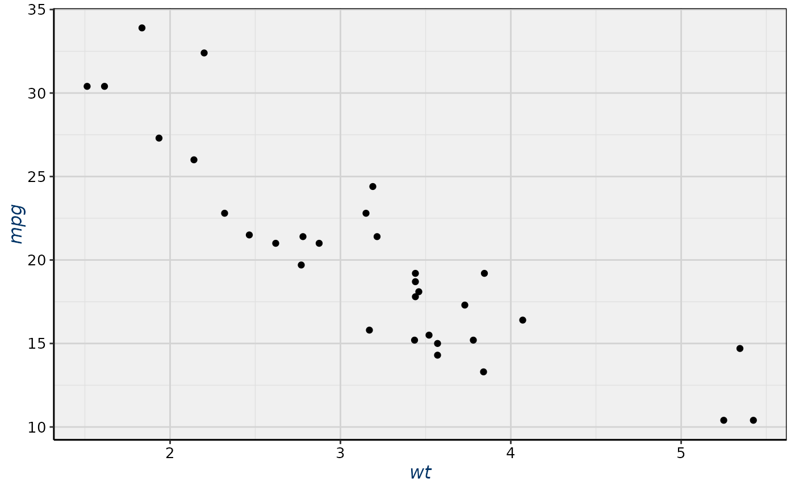

This function defines a custom ggplot2 theme with a clean and structured appearance, designed for eCampus-related visualizations. It applies a minimal theme with specific color and text settings for consistency.
Value
A ggplot2 theme object with customized elements including titles, axis text, legend styles, and background settings.
Details
The theme applies:
A centered, bold plot title in deep blue (
#003366).Italicized axis titles in deep blue (
#003366).Black axis text.
Light gray (
#f0f0f0) panel background.Grid lines in soft gray shades.
A neatly formatted legend with a white background.
Bottom-aligned legend positioning.
Well-defined facet labels (strip text).
Black axis lines and panel borders.
A white overall plot background.
Examples
library(ggplot2)
ggplot(mtcars, aes(x = wt, y = mpg)) +
geom_point() +
eCampus_theme()
